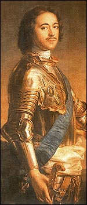

|
At the beginning of Peter’s reign, most Russians, including the nobility,
were illiterate. The practice of science was considered impious and so was discouraged.
The Russian people felt no connection to the state or to Russian society. The
traditionalism of the Eastern Orthodox Church hindered social progress.
To modernize Russia, Peter:
-
Reorganized Russia's government
to make it run more efficiently
- Improved Russia's military forces
- Created a navy
- Expanded Russia's territory to the Baltic Sea
- Subsidized development of factories, reducing Russian dependence on the West for
manufactured goods
- Stimulated trade abroad
- Improved transportation by expanding road construction
- Founded technical schools, a museum, a public library, and an art gallery
- Laid the basis for the Russian Academy of Sciences
- Started Russia's first newspaper
- Modernized the alphabet
- Introduced Western dress, food, and
customs
|

|